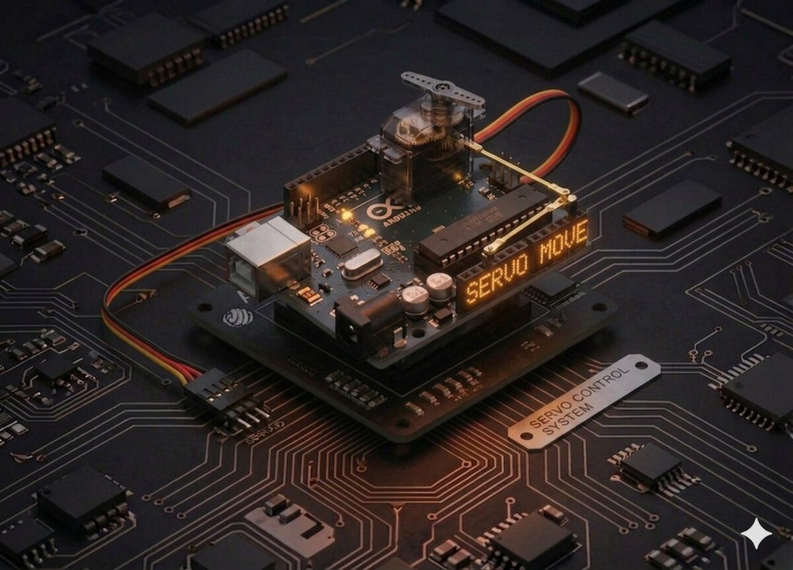

Arduino
Servomotor
Controlează un servomotor SG90 pe 180° folosind biblioteca Servo — primul pas spre roboți și brațe articulate.
Arduino
Servo
Motor
PWM
Bibliotecă
Servomotor¶
Un servomotor este un motor mic cu angrenaje care se rotește într-o poziție precisă — exact ce este nevoie pentru brațe robotizate, direcții de mașinuțe sau capace automate.

Componente necesare¶
| Componentă | Cantitate |
|---|---|
| Arduino Uno R3 | 1 |
| Servo SG90 (9 g) | 1 |
| Fire jumper M-M | 3 |
Cum funcționează¶
Servo SG90 are 3 fire:
| Culoare | Funcție |
|---|---|
| Maro / negru | GND |
| Roșu | 5 V |
| Portocaliu / galben | Semnal (PWM) |
Un servo rotește axul la un unghi specificat (între 0° și 180°) în funcție de lățimea impulsului PWM pe care îl primește pe firul de semnal:
- Impuls de ~1 ms → 0°
- Impuls de ~1.5 ms → 90°
- Impuls de ~2 ms → 180°
Nu trebuie să calculezi tu asta! Biblioteca Servo.h (inclusă implicit în Arduino IDE) face totul pentru tine. Scrii myservo.write(unghi) și servo-ul merge acolo.
Specificații SG90¶
- Tensiune de lucru: 4.8 – 6 V
- Cuplu: ~1.6 kg·cm la 4.8 V
- Viteză: ~0.12 s/60°
Conectare¶
| Fir servo | Arduino |
|---|---|
| Maro (−) | GND |
| Roșu (+) | 5 V |
| Portocaliu (semnal) | D9 |
Arduino Servo SG90
5V ───── roșu ── Putere (+)
GND ───── maro ── Masă (−)
D9 ───── portoc── Semnal (PWM)
Cod¶
/*
* Proiect 8 — Servomotor SG90
* Rotește axul între 0° și 180°.
*/
#include <Servo.h>
Servo myservo; // Obiectul care controlează servomotorul
int pos = 0; // Poziția curentă
void setup() {
myservo.attach(9); // Servo conectat la pinul 9
}
void loop() {
// De la 0 la 180 grade
for (pos = 0; pos <= 180; pos += 1) {
myservo.write(pos);
delay(15);
}
// De la 180 la 0 grade
for (pos = 180; pos >= 0; pos -= 1) {
myservo.write(pos);
delay(15);
}
}
Ce să încerci¶
- Controlează servo-ul cu un joystick (Proiect 9).
- Rotește-l la un unghi fix determinat de senzorul ultrasonic (Proiect 10).
- Atașează o săgeată sau un braț mic și fă un "omul orei" (indicator de timp).
- Trimite poziția prin Serial Monitor (Proiect 17) și controlează-l manual.
Note¶
- Biblioteca
Servo.heste preinstalată — nu trebuie să o instalezi separat. - Servo-ul consumă curent și poate cauza resetări ale Arduino dacă sunt conectate mai multe. Folosește alimentare externă pentru 2+ servo-uri.
- Pe Arduino Uno, biblioteca
Servodezactivează PWM pe pinii 9 și 10.
Vezi și: Toate proiectele kit-ului